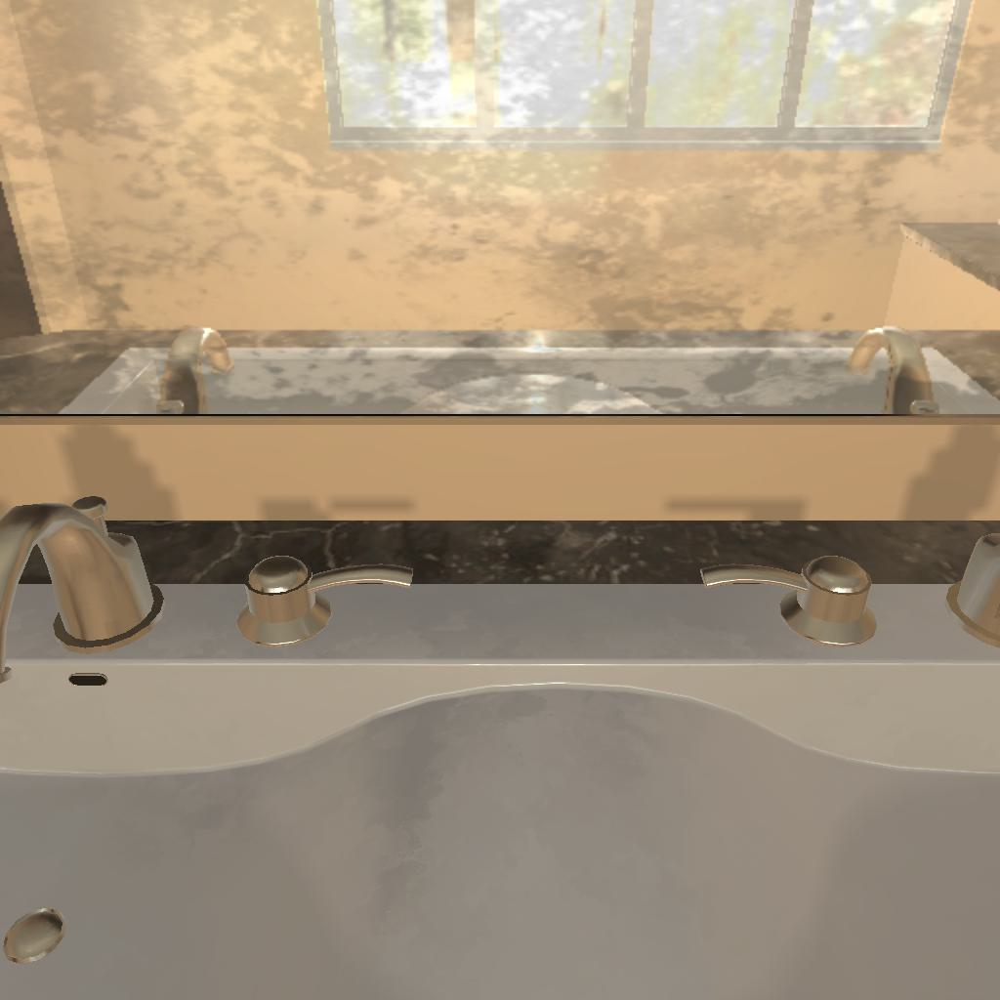

---------------------------------------------------------task: 11---------------------------------------------------------
--------------------------------------------------------------------------------------------------------------------------------------------------------------------
--------------------------------------------------------------------------------------------------------------------------------------------------------------------
Step:--------------------------------------------------------------------------19-------------------------------------------------------------------------------
----------------------------------------
VLM Prompt:
Image1:
Image2:
**Instruction**
1. Analyze the provided images to identify all visible household objects and compare the difference between images (e.h. whether the object is opened or not and taken on hand or not), focusing on those relevant to the task description "clean some soapbar and put it in bathtubbasin."
2. Use the analysis of images and the task hint "The agent must find an object of the desired type, pick it up, go to a sink or a basin, clean the object with a sink or basin, and then find the correct location to place it and put it down there. The agent does not need to use soap bottle or faucet to clean the object, and the agent just needs to do action that is "clean the object with the sink or sink basin"." to answer the question: what is the most reasonable action in the choices for the task description "clean some soapbar and put it in bathtubbasin"?
3. Decide and write the answer using the template: The answer is: (i): , where i is the real number. If there is no desired object in images, search every place based on **Initial Observation** to find the object. And if no one is exactly correct, choose a similar answer.
**Initial Observation**
You are in the middle of a room. Looking quickly around you, you can see bathtub (1), bathtubbasin (1), toilet (1), cabinet (1-2), countertop (1), sink (1), sinkbasin (1), garbagecan (1)
**Answer Choices**
(1): go to bathtub 1
(2): go to bathtubbasin 1
(3): go to toilet 1
(4): go to cabinet 1
(5): go to countertop 1
(6): go to sink 1
(7): go to garbagecan 1
(8): take faucet 1 from sinkbasin 1
(9): take faucet 2 from sinkbasin 1
(10): examine sinkbasin 1
**Answer**
Let's think step by step by following the instructions.
----------------------------------------
----------------------------------------
Original Response:
Firstly, we need to identify all visible household objects in the images. In both images, we can see a sink with faucets and a sinkbasin. There is also a reflection in the mirror that shows a bathtub and possibly a bathtubbasin, but it's not very clear. The task requires us to clean a soapbar and put it in the bathtubbasin.
From the initial observation, we know there is a bathtubbasin, which is likely to be the correct location to place the cleaned soapbar. However, we do not see any soapbar in the images provided, so we need to search for it based on the initial observation.
The task hint tells us that the agent must find an object of the desired type (soapbar), pick it up, go to a sink or basin, clean the object, and then find the correct location to place it (bathtubbasin). Since we don't see the soapbar in the images, we need to search for it, likely in a cabinet or on the countertop.
Based on the task description and the information we have, the most reasonable action would be to look for the soapbar first. Since we don't see it in the images, it might be in the cabinet or on the countertop.
The answer is: (4): go to cabinet 1
----------------------------------------
----------------------------------------
>>> Refine Original VLM Response and Get Pure Action: go to cabinet 1
----------------------------------------
-----------------------------------------------------------------
Running time: 22.490073442459106 seconds
Total Money: 5.242150000000003
-----------------------------------------------------------------
-----------------------------------------------------------------
Text Observation:You arrive at loc 3. The cabinet 1 is open. On the cabinet 1, you see a faucet 1, a spraybottle 1, a toiletpaper 2, a cloth 1, a toiletpaper 1, a plunger 1, a candle 1, and a scrubbrush 1.
-----------------------------------------------------------------
UNSUCCEED